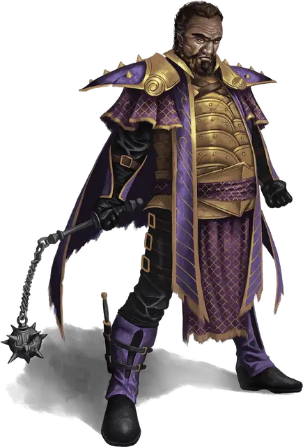

Капитан Отельстан
Captain Othelstan
Средний Гуманоид (Человек), законно-злой, именной НИП

Класс Доспеха 19 (наборной доспех, щит)
Хиты 93 (11к10 + 33)
Скорость 30 футов
| мод | спас | ||
|---|---|---|---|
| СИЛ | 19 | +4 | +7 |
| ЛОВ | 10 | +0 | +0 |
| ТЕЛ | 16 | +3 | +6 |
| мод | спас | ||
|---|---|---|---|
| ИНТ | 13 | +1 | +1 |
| МДР | 14 | +2 | +2 |
| ХАР | 12 | +1 | +1 |
Навыки Атлетика +7, Восприятие +5, Запугивание +4, Религия +4
Чувства пассивное Восприятие 15
Языки Общий, Великаний, Драконий
Опасность 5 (1800 опыта)
Бонус мастерства +3
Особенности
Всплеск действий (Перезарядка после Короткого или Продолжительного отдыха). В свой ход, Отельстан может совершить одно дополнительное действие.
Благословение возмездия Тиамат. . Когда Отельстан получает урон, который опускает его хиты до 0, он немедленно восстанавливает 20 хитов. Если в конце его следующего хода у него остаётся 20 или менее хитов - он умирает.
Действия
Мультиатака. Отельстан совершает две атаки либо цепом, либо копьём, либо проводит две дальнобойные атаки копьями.
Цеп. Рукопашная атака оружием: +7 к попаданию, досягаемость 5 футов, одна цель. Попадание: 8 (1к8+4) рубящего урона.
Копьё. Рукопашная или Дальнобойная атака оружием: +7 к попаданию, досягаемость 5 футов или дистанция 20 / 60 футов, одна цель. Попадание: 7 (1к6+4) колющего урона.